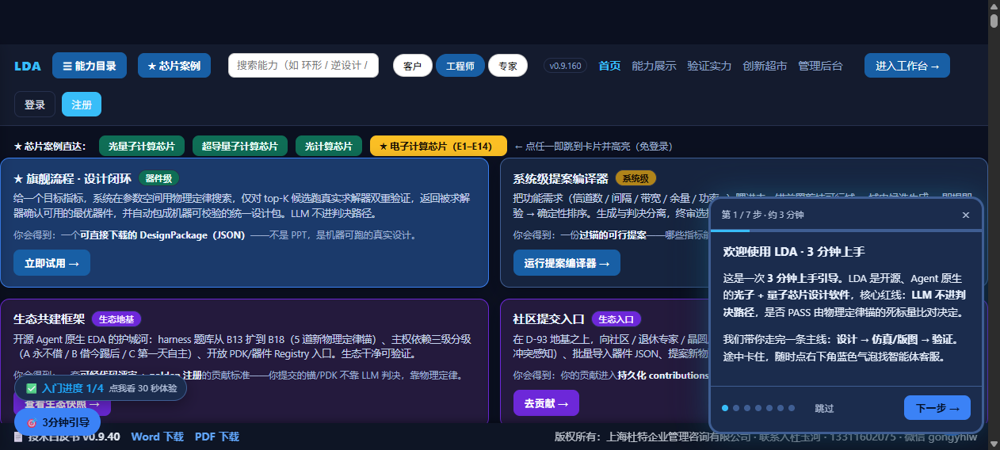
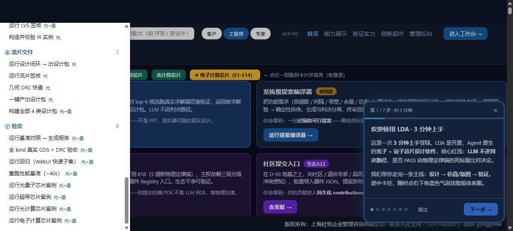
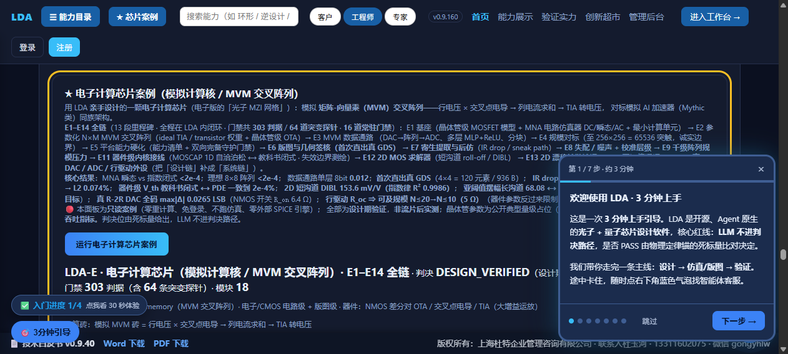

https://lda.weomnitech.com.cn · 本卡所有路径与截图
均为实测（agent-browser 真实打开生产站点逐步骤跑通后截取）
先说不是什么：
| 怀疑对象 | 实测结论 |
|---|---|
| 缓存 | 不是。生产返回的 HTML 与本地源码 419,869 字节逐字节相同，关键词计数完全一致。 |
| 部署 | 不是。部署校验 HEAD_MATCH=True，案例数据端点 /api/ecore_demo 正常。 |
| 权限 | 不是。案例卡本来就免登录（不在需登录的重计算面板之列）。 |
| 功能坏了 | 不是。案例卡自身门禁 40 项判据全绿，数据正常。 |
真正的原因（三个叠加的页面缺陷）：
| # | 缺陷 | 实测证据 |
|---|---|---|
| ① | 入口叫「目录」 唯一的能力清单入口，按钮上只有「目录」两个字，看不出里面有「芯片案例」 |
该按钮由页面脚本注入，原文是 <button id="wbMenuBtn">目录</button> |
| ② | 点开了也被自家浮层压住 抽屉层级只有 999，而页面自己注入的「💬 客服 / ✅ 入门进度 / 🎯 3分钟引导 / 3分钟上手」浮层层级高达 21.47 亿 |
在抽屉区域内取「最上层元素」，命中的是浮层而不是抽屉 ⇒ 看起来像「打不开 / 没反应」 |
| ③ | 卡片埋在 48 屏处且没有入口 4 张芯片案例卡在页面很靠下的位置 |
#sec-ecore 实测在 26,872 px，整页 27,423 px；全页 0 个指向这些卡片的首屏入口 |
https://lda.weomnitech.com.cn


抽屉顶部还有搜索框（可搜「电子 / 环形 / 逆设计 / DRC」）和角色切换（客户 / 工程师 / 专家）。
https://lda.weomnitech.com.cn/#sec-ecore
粘进地址栏回车即可。锚点落地后会黄色描边高亮，并自动运行一次案例。
（其余三张卡同理：#sec-qchip 光量子 · #sec-schip 超导 · #sec-pchip 光计算）

| # | 看哪里 | 应该看到 |
|---|---|---|
| 1 | 页面顶部最右 | 版本号 v0.9.160 |
| 2 | 首屏第一行 | 「★ 芯片案例直达：…」四个彩色按钮，含黄色的「★ 电子计算芯片（E1–E14）」 |
| 3 | 点完之后卡片顶部 | 标题「★ 电子计算芯片案例（模拟计算核 / MVM 交叉阵列）」完整可见（不被顶部导航压住） |
| 4 | 卡片边框 | 一圈黄色描边（表示你就是从入口跳过来的） |
| 5 | 蓝色摘要行 | 判决 DESIGN_VERIFIED（设计期验证）· 征程 13 段 · 门禁 303 判据（含 64 探针）· 模块 18 |
| 6 | 卡片正文（hint） | E1–E14 全链 → 最后一项是 E14 真 DAC / ADC / 行驱动外设 |
| 7 | 页面下半（继续滚） | 能展开看到 E1–E14 的分段结果表、诚实边界表 |
把下面整段粘进 Windows 终端（PowerShell），会打印案例卡的关键字段：
$r = Invoke-RestMethod https://lda.weomnitech.com.cn/api/ecore_demo "case_id : " + $r.case_id "span : 段=$($r.span.gate_checks) 判据 探针=$($r.span.probe_checks) 模块=$($r.span.modules)" "verdict : " + $r.verdict "gaps : " + $r.gaps_total + " 条（末条 = " + $r.gaps[-1].id + "）"
预期输出要点：case_id 含 E1–E14 全链；verdict = DESIGN_VERIFIED；
span 里 gate_checks=303、probe_checks=64、modules=18；gaps = 14 条。
| 要什么 | 怎么拿 |
|---|---|
| ① 页面地址 | 直接从浏览器地址栏整条复制（含 #... 部分） |
| ② 版本号 | 页面右上角那串 v0.9.xxx（一句话截图即可） |
| ③ 截图 | 你看到的那一屏——尤其「第一行为空 / 按钮颜色不对 / 点了没反应」这三种情况 |
如果三样都符合预期却仍然找不到，请告诉我浏览器与缩放比例（例如「豆包浏览器 125% 缩放」）—— 本卡已按窄视口（窗口较小时顶部导航会换行）实测过，但不同缩放可能还有边界情况， 我会按你给的信息补测并加固。
① 本卡是设计期验证的操作验收，不是流片后实测；
② 案例卡为公开只读 · 零重计算 · 免登录（它不进重计算面板的登录闸门）；
③ 本次修复的是页面入口可达性，未改动任何求解器能力、未动锚账本
（锚仍 476 道、CI core 由 253 增至 254 是因为新增了这道入口门禁）；
④ 新增常驻门禁 run_webui_entry_smoke.py（18 判据 + 5 突变探针）——
以后若有人把入口改名回「目录」、把抽屉层级降回去、或删掉首屏直达，门禁会当场变红。
⑤ 底部版权条仍显示「技术白皮书 v0.9.40」—— 这是白皮书文件自己的版本
（static/ 内实际文件即 lda_whitepaper_v0.9.40.docx/pdf），
与平台版本号 v0.9.160 是两回事，非笔误；若需统一口径请告知。